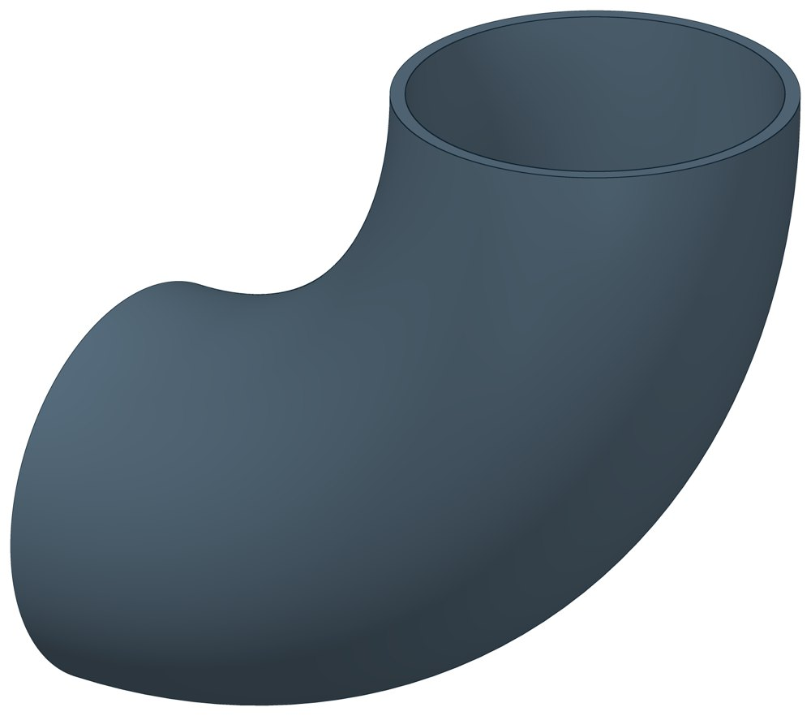

Отвод стальной крутоизогнутый 90°, 09Г2С
Крутоизогнутый отвод 90° под приварку из низколегированной стали 09Г2С. Размеры те же, что у отводов из стали 20.

- Диаметр трубы Dн
- 57–820 мм
- Документ
- ГОСТ 17375-2001
- Исполнений
- 18
- Масса
- 0,8–376 кг
- Цена в магазине
- 104–43 217 ₽
- 3D-модели
- у всех исполнений
Применение и монтаж
Назначение: где применяется
Трубопроводы из низколегированной стали. Отвод подбирают по наружному диаметру и толщине стенки трубы.
Отличия от соседних типов
Обычное исполнение из углеродистой стали — Отводы ст20.
D — наружный диаметр, T — толщина стенки, F — расстояние от торца до центра гиба, R — радиус гиба по оси. Масса — по таблице ГОСТ 17375-2001.
Таблица исполнений
| Обозначение | Код ПРОМБУРГ | Dмм | Tмм | DN | Fмм | Rмм | Цена₽ | Массакг | Артикул | Магазин | 3D |
|---|---|---|---|---|---|---|---|---|---|---|---|
| 57×5 | ПБ-ОТВГ-0057-1 | 57 | 5 | 50 | 75 | 75 | 104 | 0,8 | TEN2014 | Купить | 3D |
| 76×4 | ПБ-ОТВГ-0076-1 | 76 | 4 | 65 | 100 | 100 | 176 | 1,1 | TEN2015 | Купить | 3D |
| 89×5 | ПБ-ОТВГ-0089-1 | 89 | 5 | 80 | 120 | 120 | 291 | 1,9 | TEN2016 | Купить | 3D |
| 108×5 | ПБ-ОТВГ-0108-1 | 108 | 5 | 100 | 150 | 150 | 377 | 3,1 | TEN2017 | Купить | 3D |
| 133×5 | ПБ-ОТВГ-0133-1 | 133 | 5 | 125 | 190 | 190 | 576 | 4,8 | TEN2018 | Купить | 3D |
| 159×4,5 | ПБ-ОТВГ-0159-1 | 159 | 4,5 | 150 | 225 | 225 | 801 | 6,1 | TEN2019 | Купить | 3D |
| 159×6 | ПБ-ОТВГ-0159-2 | 159 | 6 | 150 | 225 | 225 | 890 | 8,1 | TEN2020 | Купить | 3D |
| 159×8 | ПБ-ОТВГ-0159-3 | 159 | 8 | 150 | 225 | 225 | 1 141 | 11 | TEN2021 | Купить | 3D |
| 219×6 | ПБ-ОТВГ-0219-1 | 219 | 6 | 200 | 300 | 300 | 1 696 | 15 | TEN2022 | Купить | 3D |
| 273×7 | ПБ-ОТВГ-0273-1 | 273 | 7 | 250 | 375 | 375 | 3 443 | 27 | TEN2023 | Купить | 3D |
| 325×8 | ПБ-ОТВГ-0325-1 | 325 | 8 | 300 | 450 | 450 | 4 971 | 45 | TEN2024 | Купить | 3D |
| 377×10 | ПБ-ОТВГ-0377-1 | 377 | 10 | 350 | 525 | 525 | 7 922 | 75 | TEN2025 | Купить | 3D |
| 426×8 | ПБ-ОТВГ-0426-1 | 426 | 8 | 400 | 600 | 600 | 8 738 | 78 | TEN2026 | Купить | 3D |
| 426×10 | ПБ-ОТВГ-0426-2 | 426 | 10 | 400 | 600 | 600 | 10 444 | 97 | TEN2027 | Купить | 3D |
| 530×10 | ПБ-ОТВГ-0530-1 | 530 | 10 | 500 | 750 | 750 | 18 313 | 153 | TEN2028 | Купить | 3D |
| 630×10 | ПБ-ОТВГ-0630-1 | 630 | 10 | 600 | 900 | 900 | 25 951 | 219 | TEN2029 | Купить | 3D |
| 720×10 | ПБ-ОТВГ-0720-1 | 720 | 10 | 700 | 1000 | 1000 | 32 962 | 275 | TEN2030 | Купить | 3D |
| 820×10 | ПБ-ОТВГ-0820-1 | 820 | 10 | 800 | 1200 | 1200 | 43 217 | 376 | TEN2031 | Купить | 3D |
Цена — из магазина promburg.ru на дату редакции каталога 11.10.2026, ₽ за штуку; актуальную цену и наличие уточняйте при заказе.
Чтобы заказать, сообщите обозначение и код ПРОМБУРГ: +7 (499) 325-51-35, promburg@yandex.ru.
Нормативные документы
- ГОСТ 17375-2001 Детали трубопроводов бесшовные приварные из углеродистой и низколегированной стали. Отводы крутоизогнутые типа 3D (R=1,5 DN). Конструкция — документ, по которому изготавливается изделие
На трубу Dн 57–820 мм в каталоге
Позиции каталога с исполнениями на те же наружные диаметры трубы.
Опоры и подвески
- Опора неподвижная двухупорная ТС-660 общих Dн: 15
- Опорные плиты диэлектрические ТС-632 общих Dн: 15
- Опоры приварные неподвижные скользящие ОПН общих Dн: 15
- Опоры сварные скользящие неподвижные и направляющие СТО 79814898-130 общих Dн: 15
- Опоры хомутовые и скользящие неподвижные и направляющие СТО 79814898-131 общих Dн: 15
- Опора приварная скользящая и неподвижная ОСТ 34-10-616-93 общих Dн: 15
- Опоры хомутовые скользящие ОСТ 34-10-617-93 общих Dн: 15
- Опоры хомутовые неподвижные ОСТ 34-10-618-93 общих Dн: 15
- Опоры скользящие неподвижные ОСТ 34-10-623-93 общих Dн: 15
- Блок подвески с опорной балкой ОСТ 34-10-726-93 общих Dн: 15
- Блок хомутовый ОСТ 24-125-113-01 общих Dн: 15
- Полухомуты для хомутовых блоков подвесок горизонтальных трубопроводов из хромо молибден о ванадиевых сталей ОСТ 24-125-114-01 общих Dн: 15
- Полухомут для хомутовых опор ОСТ 24-125-120-01 общих Dн: 15
- Опоры неподвижные ППУ-ОЦ (ПЭ) ППУ неподвижная общих Dн: 14
И ещё 96 типов — в оглавлении каталога.
Компенсаторы
- Компенсатор сильфонный 2ОПКР общих Dн: 15
- Компенсатор сильфонный 2ОПКР (ИЯНШ) 2ОПКРИ общих Dн: 15
- Компенсатор сильфонный 2СКУ.М 2СКУМ общих Dн: 15
- Компенсатор сильфонный 2СКУ.М (ИЯНШ) 2СКУМИ общих Dн: 15
- Компенсатор сильфонный 2СКУ.ППМ (ИЯНШ) 2СКУППМИ общих Dн: 15
- Компенсатор сильфонный 2СКУ.ППУ (ИЯНШ) 2СКУППУИ общих Dн: 15
- Компенсатор сильфонный 2СКУ.ППУ/ОЦ (ИЯНШ) 2СКУППУОЦИ общих Dн: 15
- Компенсатор сильфонный КС общих Dн: 15
- Компенсатор сильфонный КСО общих Dн: 15
- Компенсатор сильфонный КСО (ИЯНШ) КСОИ общих Dн: 15
- Компенсатор сильфонный КСОФ общих Dн: 15
- Компенсатор сильфонный ОПКР общих Dн: 15
- Компенсатор сильфонный ОПКР (ИЯНШ) ОПКРИ общих Dн: 15
- Компенсатор сильфонный сейсмический общих Dн: 15
И ещё 21 тип — в оглавлении каталога.
Другие детали
- Отвод стальной крутоизогнутый 90° общих Dн: 15
- Фланец стальной воротниковый общих Dн: 15
- Фланец стальной плоский приварной общих Dн: 15
- Заглушка стальная эллиптическая общих Dн: 13
- Переход стальной концентрический общих Dн: 12
- Днище стальное эллиптическое общих Dн: 5
- Отвод нержавеющий 90° общих Dн: 1
Другие типы раздела
Детали трубопроводов (отводы, переходы, фланцы, заглушки, днища, тройники)
- Днище стальное эллиптическое
- Заглушка стальная эллиптическая
- Отвод нержавеющий 90°
- Отвод стальной крутоизогнутый 90°
- Переход стальной концентрический
- Тройник стальной равнопроходный
- Фланец стальной воротниковый
- Фланец стальной плоский приварной
- Фланцы прочие
Частые вопросы
Что указать в заявке, чтобы получить цену без уточнений?
Обозначение с номером исполнения или код ПБ, количество, Dн и стенку трубы, расчётную температуру наружного воздуха, покрытие, город доставки и желаемый срок. Кнопка «В заявку» в таблице собирает спецификацию, которую можно выгрузить в Excel или отправить письмом.
Какой радиус гиба у отводов?
Отводы каталога приведены по ГОСТ 17375-2001: радиус гиба около полутора условных проходов. Для отвода 108 мм (Ду 100) R = 150 мм, для 219 мм (Ду 200) — 300 мм. Отводы с радиусом около одного условного прохода — это другой стандарт, ГОСТ 30753-2001.
Масса в таблице — фактическая?
Нет, справочная: в стандартах масса рассчитана по номинальным размерам. У переходов в ГОСТ 17378-2001 это масса трубной заготовки — готовый переход легче.
Есть ли отводы на 45°, 60° и 180°?
В таблицах каталога — отводы 90°. ГОСТ 17375-2001 предусматривает также 45° и 180°, а для отечественного ряда диаметров и 60°; такие позиции уточняйте при заказе.
Детали подбирают по Ду или по наружному диаметру?
Приварные детали — отводы, переходы, тройники, заглушки, днища — по наружному диаметру и толщине стенки трубы, запись вида 219×6. Фланцы — по условному проходу Ду и давлению Ру.